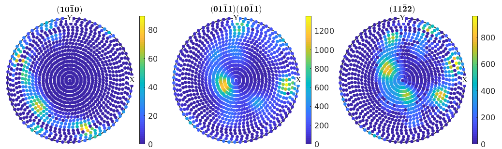
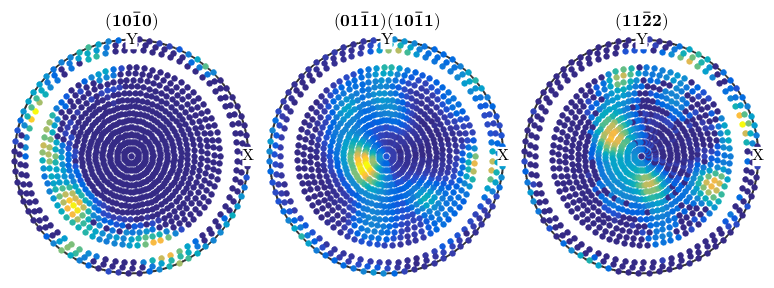
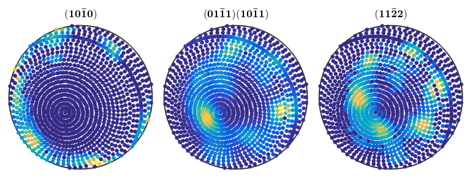
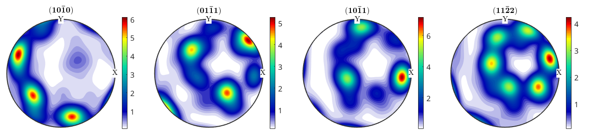
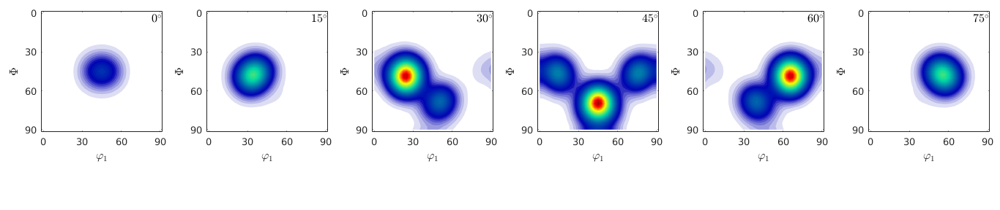
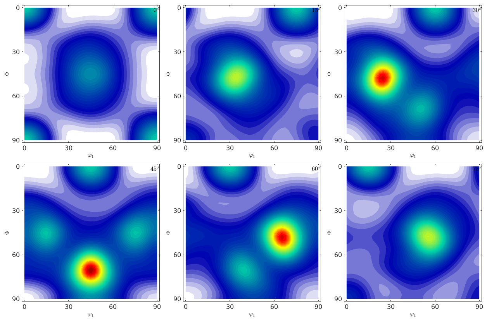
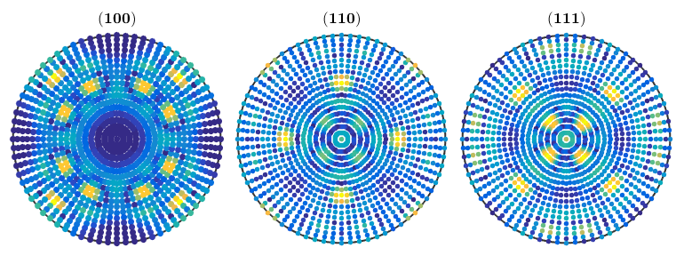

This example demonstrates the most important MTEX tools for analysing Pole Figure Data.
% specify crystal and specimen symmetry CS = crystalSymmetry('-3m',[1.4 1.4 1.5]); SS = specimenSymmetry; % specify file names fname = {... fullfile(mtexDataPath,'PoleFigure','dubna','Q(10-10)_amp.cnv'),... fullfile(mtexDataPath,'PoleFigure','dubna','Q(10-11)(01-11)_amp.cnv'),... fullfile(mtexDataPath,'PoleFigure','dubna','Q(11-22)_amp.cnv')}; % specify crystal directions h = {Miller(1,0,-1,0,CS),... [Miller(0,1,-1,1,CS),Miller(1,0,-1,1,CS)],... % superposed pole figures Miller(1,1,-2,2,CS)}; % specify structure coefficients c = {1,[0.52 ,1.23],1}; % import data pf = loadPoleFigure(fname,h,CS,SS,'interface','dubna','superposition',c); plot(pf) mtexColorbar
e =
PropertyEvent with properties:
AffectedObject: [1×1 ColorBar]
Source: [1×1 matlab.graphics.internal.GraphicsMetaProperty]
EventName: 'PostSet'
e =
PropertyEvent with properties:
AffectedObject: [1×1 ColorBar]
Source: [1×1 matlab.graphics.internal.GraphicsMetaProperty]
EventName: 'PostSet'
e =
PropertyEvent with properties:
AffectedObject: [1×1 ColorBar]
Source: [1×1 matlab.graphics.internal.GraphicsMetaProperty]
EventName: 'PostSet'
 get raw data Data stored in a PoleFigure variable can be extracted by
I = pf.intensities; % intensities h = pf.h; % Miller indice r = pf.r; % specimen directions
basic statistics There are also some basic statics on pole figure intensities
min(pf) max(pf) isOutlier(pf);
ans =
0 0 0
ans =
1.0e+03 *
0.0898 1.3600 0.9620
pf_modified = pf(pf.r.theta < 70*degree | pf.r.theta > 75*degree) plot(pf_modified)
pf_modified = PoleFigure crystal symmetry : -3m1, X||a, Y||b*, Z||c specimen symmetry: 1 h = (10-10), r = 1 x 1224 points h = (01-11)(10-11), r = 1 x 1224 points h = (11-22), r = 1 x 1224 points
rot = rotation('axis', xvector-yvector,'angle',25*degree); pf_modified = rotate(pf,rot) plot(pf_modified)
pf_modified = PoleFigure crystal symmetry : -3m1, X||a, Y||b*, Z||c specimen symmetry: 1 h = (10-10), r = 72 x 19 points h = (01-11)(10-11), r = 72 x 19 points h = (11-22), r = 72 x 19 points
rec = calcODF(pf,'RESOLUTION',10*degree,'iter_max',6) plotPDF(rec,h) mtexColorbar
initialize solver
start iteration
error: 6.6306E-01 5.1999E-01 3.9321E-01 2.8622E-01 2.1017E-01 1.7305E-01 1.5645E-01
Finished PDF-ODF inversion.
error: 1.5645E-01
alpha: 6.8114E+00 1.0320E+02 1.4255E+02
rec = ODF
crystal symmetry : 321, X||a, Y||b*, Z||c
specimen symmetry: 1
Radially symmetric portion:
kernel: de la Vallee Poussin, halfwidth 10°
center: 2472 orientations, resolution: 10°
weight: 1
e =
PropertyEvent with properties:
AffectedObject: [1×1 ColorBar]
Source: [1×1 matlab.graphics.internal.GraphicsMetaProperty]
EventName: 'PostSet'
e =
PropertyEvent with properties:
AffectedObject: [1×1 ColorBar]
Source: [1×1 matlab.graphics.internal.GraphicsMetaProperty]
EventName: 'PostSet'
e =
PropertyEvent with properties:
AffectedObject: [1×1 ColorBar]
Source: [1×1 matlab.graphics.internal.GraphicsMetaProperty]
EventName: 'PostSet'
e =
PropertyEvent with properties:
AffectedObject: [1×1 ColorBar]
Source: [1×1 matlab.graphics.internal.GraphicsMetaProperty]
EventName: 'PostSet'
 odf = SantaFe % define specimen directions r = regularS2Grid('antipodal')
odf = ODF
crystal symmetry : m-3m
specimen symmetry: 222
Uniform portion:
weight: 0.73
Radially symmetric portion:
kernel: de la Vallee Poussin, halfwidth 10°
center: (296.56505°,48.18969°,26.56505°)
weight: 0.27
r = S2Grid
size: 72 x 19
define crystal directions
h = [Miller(1,0,0,odf.CS),Miller(1,1,0,odf.CS),Miller(1,1,1,odf.CS)];
simulate pole figure data
pf_SantaFe = calcPoleFigure(SantaFe,h,r);
estimate an ODF with ghost correction
rec = calcODF(pf_SantaFe,'RESOLUTION',10*degree,'background',10) plot(rec,'sections',6)
initialize solver
start iteration
error: 9.0080E-02 2.5254E-02 1.1496E-02 8.9331E-03 7.1991E-03 5.9732E-03 5.1861E-03 4.4359E-03 3.8397E-03 3.2372E-03 2.7825E-03
Finished PDF-ODF inversion.
error: 2.7825E-03
alpha: 1.0006E+00 9.9733E-01 9.9459E-01
initialize solver
start iteration
error: 5.4173E-01 3.3935E-01 2.3711E-01 1.8011E-01 1.3962E-01 1.0473E-01 7.6948E-02 5.2699E-02 3.6109E-02 2.5846E-02 1.9807E-02 1.6550E-02
Finished PDF-ODF inversion.
error: 1.6550E-02
alpha: 9.8659E-01 1.0024E+00 1.0096E+00
rec = ODF
crystal symmetry : 432
specimen symmetry: 222
Uniform portion:
weight: 0.72954
Radially symmetric portion:
kernel: de la Vallee Poussin, halfwidth 10°
center: 150 orientations, resolution: 10°
weight: 0.27046
 without ghost correction
rec_ng = calcODF(pf_SantaFe,'RESOLUTION',10*degree,'background',10,'NoGhostCorrection') plot(rec_ng,'sections',6)
initialize solver
start iteration
error: 9.0080E-02 2.5254E-02 1.1496E-02 8.9331E-03 7.1991E-03 5.9732E-03 5.1861E-03 4.4359E-03 3.8397E-03 3.2372E-03 2.7825E-03
Finished PDF-ODF inversion.
error: 2.7825E-03
alpha: 1.0006E+00 9.9733E-01 9.9459E-01
rec_ng = ODF
crystal symmetry : 432
specimen symmetry: 222
Radially symmetric portion:
kernel: de la Vallee Poussin, halfwidth 10°
center: 150 orientations, resolution: 10°
weight: 1
 calcError(pf_SantaFe,rec) calcError(pf_SantaFe,rec_ng)
progress: 100%
ans =
0.0165 0.0249 0.0227
progress: 100%
ans =
0.0301 0.0316 0.0297
Difference plot
plotDiff(pf_SantaFe,rec)
progress: 100%
ODF error
calcError(SantaFe,rec) calcError(SantaFe,rec_ng)
ans =
0.0271
ans =
0.0859
3)
a) Load the pole figure data of a quartz specimen from: data/dubna!
b) Inspect the raw data. Are there noticeable problems?
c) Compute an ODF from the pole figure data.
d) Plot some pole figures of that ODF and compare them to the measured pole figures.
e) Compute the RP errors for each pole figure.
f) Plot the difference between the raw data and the calculated pole figures. What do you observe?
g) Remove the erroneous values from the pole figure data and repeat the ODF calculation. How do the RP error change?
h) Vary the number of pole figures used for the ODF calculation. What is the minimum set of pole figures needed to obtain a meaningful ODF?
| DocHelp 0.1 beta |